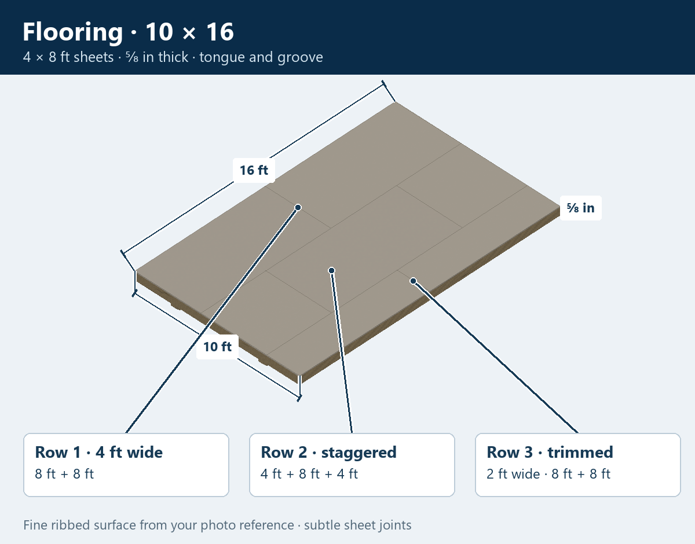
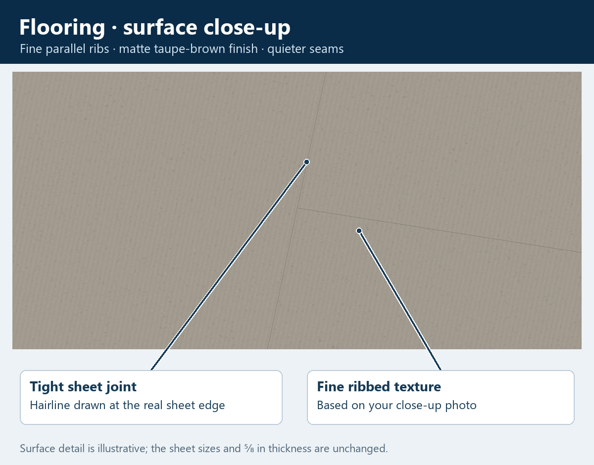
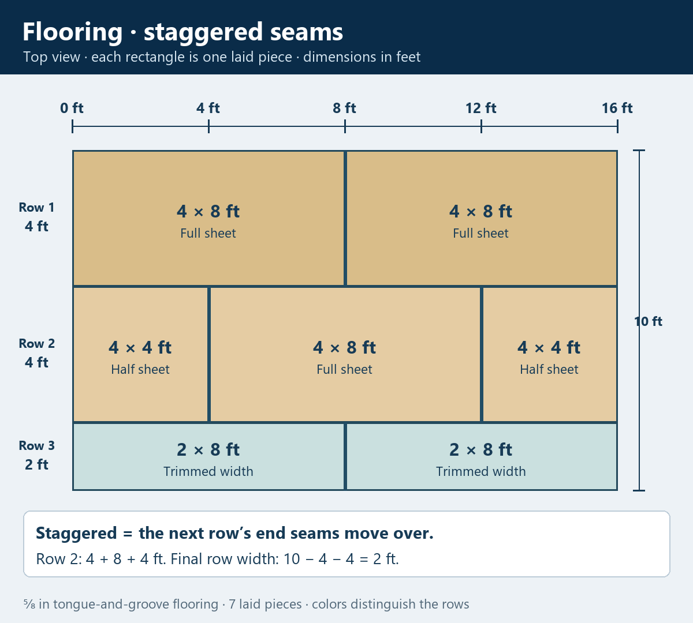

10 × 16 · Floor first
Flooring
The 4 × 8-foot tongue-and-groove sheets are ⅝ inch thick and rest on top of the floor joists. Their 8-foot length runs along the 16-foot building.
Staggered means the sheet end seams move over in the next row. The second row runs 4 feet + 8 feet + 4 feet, as you confirmed. Across the 10-foot floor, two 4-foot rows leave 2 feet for the last row, so those pieces are trimmed narrower.

The flooring texture up close

How the seams stagger

The surface texture follows your photos; its exact rib spacing is illustrative. The tongue-and-groove edge shape and sheet material have not been specified yet.